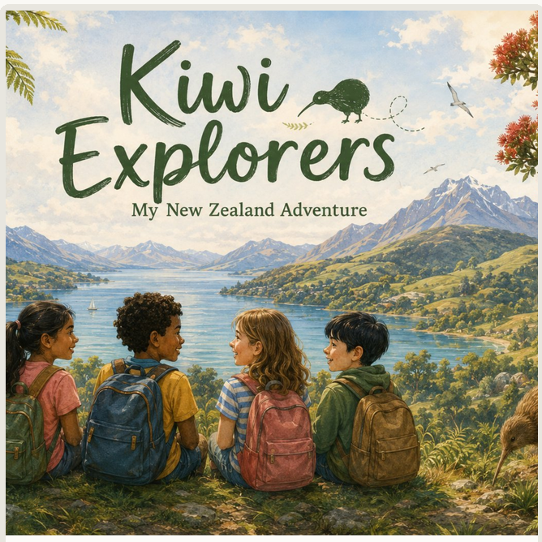
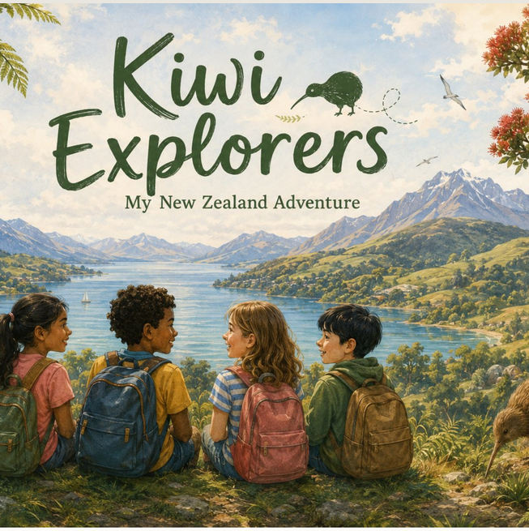
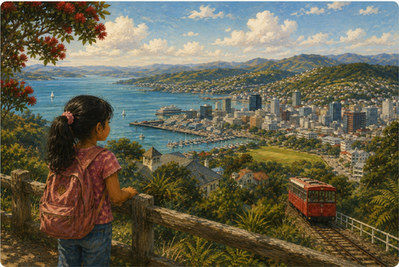
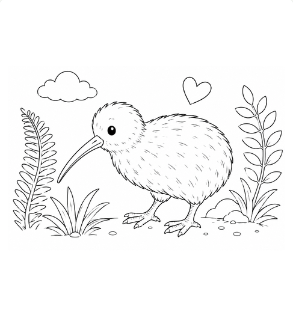

Ethicare · Little Explorers
So we made one of them a book of her own.

Not just a relocation pack
One of the anaesthetic technicians we are moving to Wellington flies ahead of his family. His daughter is six. She has been told she is leaving the only country she has ever known, and everything sent to the house so far has been addressed to her dad.
So we wrote one for her.

It starts with where she is going
Hills full of houses, a big harbour, boats, and a little red cable car that climbs up through the trees.
From the book · the lookout at the top

Discovering a new country
Birds, cable cars, ferries, ferns. New words, new places.
Something to take part in
Colouring pages, questions, explorer missions, and spaces that can only be filled in once she has actually landed.

Colour me in · “Real kiwis are brown, but yours can be any colour you like”
Why we made it
We are not just helping a clinician relocate. We are helping a family move their life.
Recruitment finds the role. Relocation gets the whole family into the life around it, including the people too small to read the paperwork.
Our first Kiwi Explorers book. Not our last.
ethicareresourcing.com